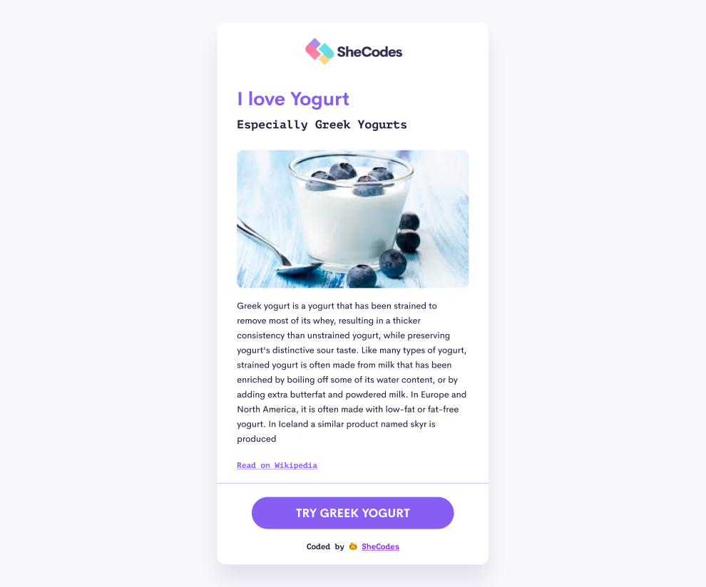
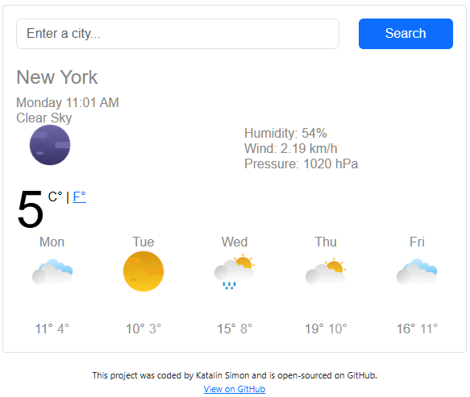
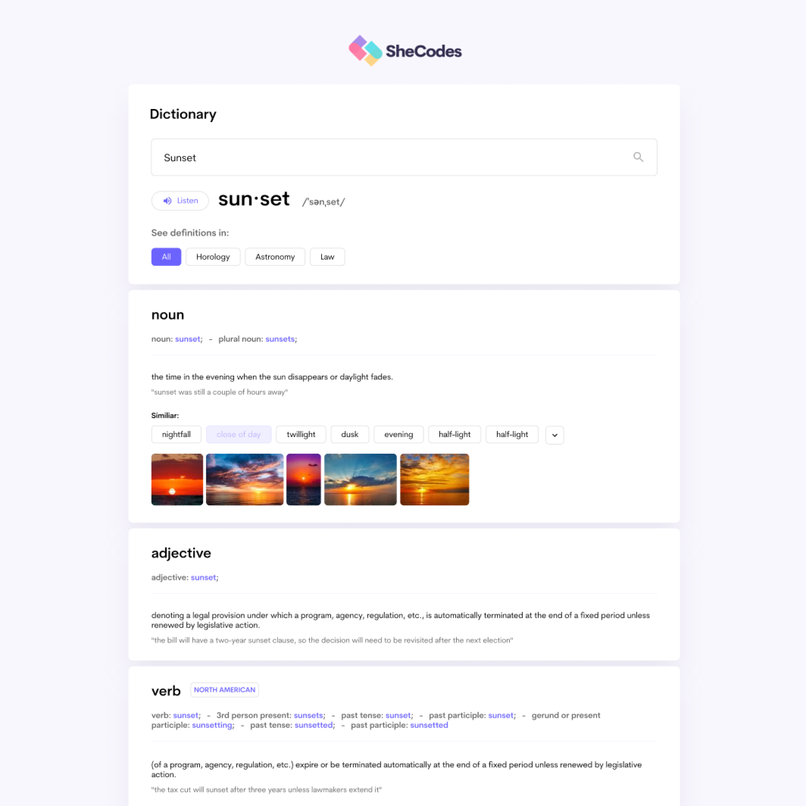

Featured projects - a selection of my work

A personal project combining food science, research and hands-on development. Exploring the chemistry behind fermentation, flavor profiling and ingredient interactions — from yoghurt cultures to complex recipe testing. The process is documented through visual storytelling, capturing each stage from concept to finished dish.
Learn moreA responsive web application displaying real-time weather information for any location. Built with HTML, CSS and JavaScript, it fetches live data via a weather API — including temperature, humidity and wind speed. Features a 5-day forecast and works across all screen sizes.
Learn more

A web application for looking up word definitions, pronunciations and example sentences. Built with HTML, CSS and JavaScript, featuring a clean and accessible interface. Demonstrates practical use of external APIs and responsive design principles.
Learn more